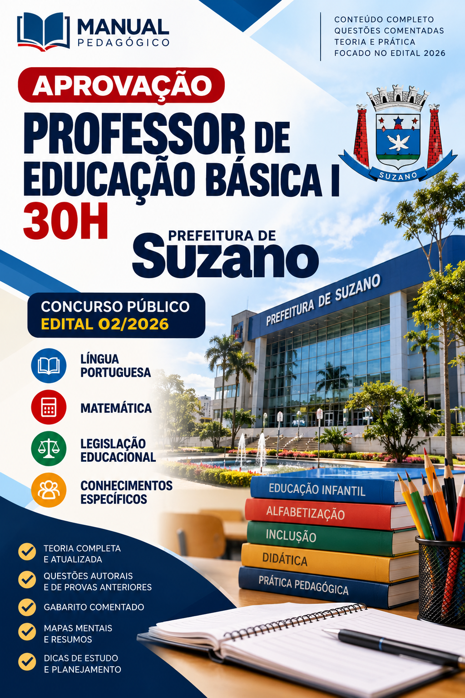

CONCURSO PÚBLICO • PROFESSOR DE EDUCAÇÃO BÁSICA I • 30H
Você está preparado para as questões mais exigentes da sua prova?
São 8 questões autorais de nível avançado, com alternativas próximas, situações-problema e interpretação cuidadosa. Descubra quais conteúdos merecem mais atenção.
8 questõesCorreção comentadaDiagnóstico por temaGratuito
Simulado independente, não oficial. Questões inéditas de treino, não reproduções de prova.
SEU DIAGNÓSTICO DE ESTUDOS

MATERIAL DE APOIO • PDF DIGITAL
✓ 71 páginas de estudo✓ Conteúdos do edital 2026✓ Material digital para revisar quando quiser
INVESTIMENTO ÚNICOR$ 10,00
QUERO MINHA APOSTILA POR R$ 10 →Entrega digital após confirmação do pagamento, conforme a plataforma de venda. Material independente, sem vínculo oficial com a Prefeitura de Suzano ou com a banca. Não há garantia de aprovação.